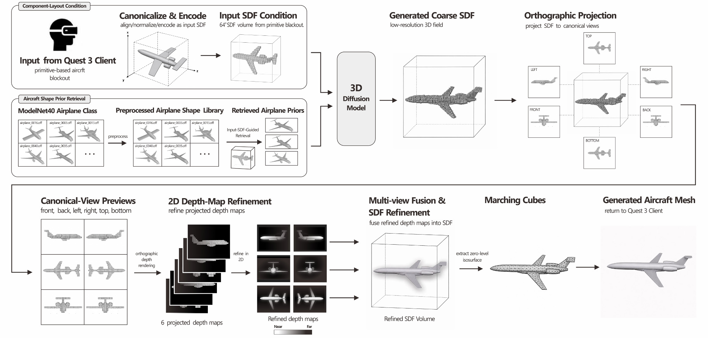

AeroForge VR: Design-to-Flight
2026 IEEE International Symposium on Mixed and Augmented Reality
University of Minnesota – Twin Cities
Abstract
AeroForge VR is designed as an entry point to 3D authoring for participants with limited experience using conventional 3D modeling tools. Participants assemble and transform primitives to express an aircraft’s coarse spatial structure and proportions. The system encodes the blockout as a signed distance field (SDF) and retrieves airplane priors. Both condition a 3D diffusion model.
After generation, participants navigate their aircraft through a cloudscape and paint mountain terrain. They experience their generated aircraft in motion and explore its spatial form from multiple viewpoints. This design-to-flight workflow integrates spatial authoring, structure-conditioned generation, and in-headset interaction into an immersive creative experience.
Design-to-Flight Pipeline

Condition 1 · User-authored structure
The primitive assembly is canonicalized and sampled on a 64 × 64 × 64 grid. The resulting input SDF encodes the component layout and proportions specified by the user.
Condition 2 · Retrieved airplane priors
The same input SDF queries a preprocessed ModelNet40 airplane library. The retrieved airplane shapes and the input SDF jointly condition the 3D diffusion model.
ModelNet40 Airplane Shape Library
Browse source airplane meshes and explore their signed-distance representations.
46 interactive models (15 train · 31 test)726 airplane metadata records ↓
Shape Prior Explorer
Surface geometry, distance-field slices, and zero isosurfaces.
Shaded view of the source shape using a display mesh.
Inspect the signed field
Blue indicates the voxelized interior; rust indicates the exterior. The dark contour marks d = 0.
SDF previews. The SDF previews are 64³ voxel-derived approximations independently computed from ModelNet40 OFF meshes for this viewer.
Preview preprocessing
Source OFF meshes are centered and uniformly normalized for display. A 64³ voxel-derived signed-distance approximation is computed for each mesh, with negative values inside and positive values outside. Marching Cubes extracts the zero isosurface. Surface and wireframe views use simplified display meshes, with source-mesh statistics reported separately.
ModelNet40: Z. Wu et al. 3D ShapeNets: A Deep Representation for Volumetric Shapes. CVPR, 2015.
Citation
@misc{shang2026aeroforge,
title = {AeroForge VR: Design-to-Flight},
author = {Shang, Songlin and Hu, Yushen},
year = {2026},
note = {Author-provided manuscript, IEEE ISMAR 2026}
}